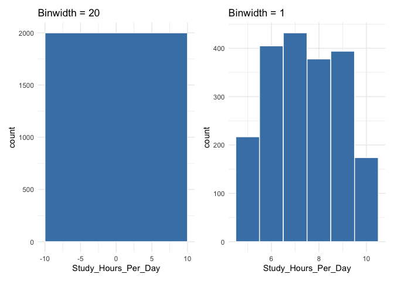
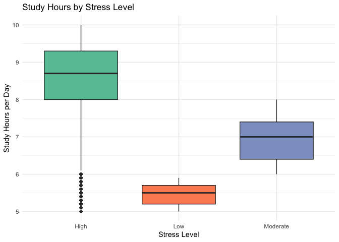
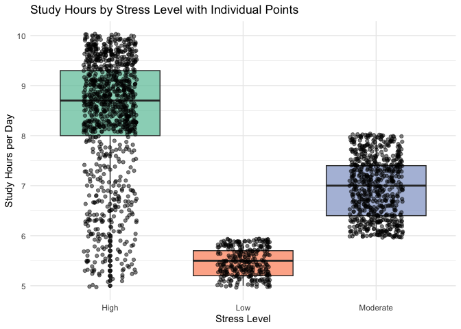
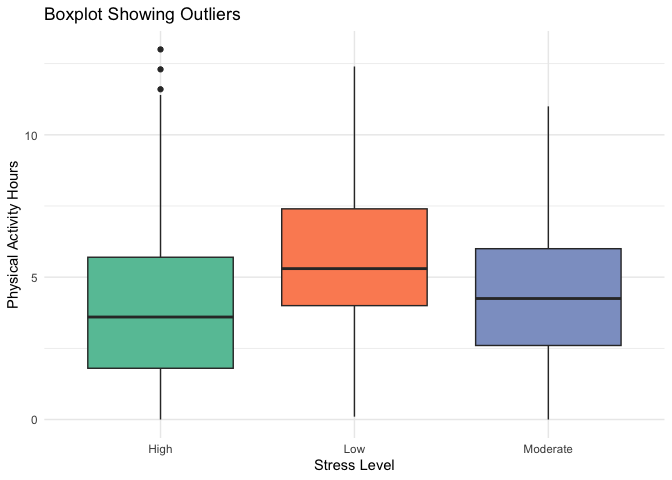
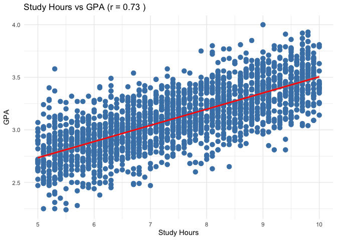

Descriptive Data
Dr. Ayse D. Lokmanoglu Lecture 5, (B) Feb 18, (A) Feb 23
Lecture 5 Table of Contents
| Section | Topic |
|---|---|
| 1 | Introduction to Descriptive Statistics |
| 1.1 | Why Descriptive Statistics? |
| 1.2 | Types of Variables |
| 2 | Measures of Central Tendency |
| 2.1 | Mean |
| 2.2 | Median |
| 2.3 | Mode |
| 2.4 | When to Use Which? |
| 3 | Measures of Spread |
| 3.1 | Range |
| 3.2 | Variance and Standard Deviation |
| 3.3 | Interquartile Range (IQR) |
| 4 | Visualizing Distributions |
| 4.1 | Histograms |
| 4.2 | Density Plots |
| 4.3 | Boxplots |
| 4.4 | Combining Visualizations |
| 5 | Detecting Outliers |
| 5.1 | What are Outliers? |
| 5.2 | IQR Method |
| 5.3 | Z-Score Method |
| 5.4 | Visualizing Outliers |
| 6 | Grouped Summary Statistics |
| 6.1 | Using group_by() and summarize() |
| 6.2 | Multiple Summary Statistics |
| 6.3 | Visualizing Grouped Data |
| 7 | Correlation |
| 7.1 | Understanding Correlation |
| 7.2 | Calculating Correlation |
| 7.3 | Correlation Matrices |
| 7.4 | Visualizing Correlations |
| 8 | Cross-Tabulations |
| 8.1 | Creating Frequency Tables |
| 8.2 | Proportions and Percentages |
| 8.3 | Visualizing Cross-Tabulations |
ALWAYS load our libraries first
library(tidyverse)
library(dplyr)
library(ggplot2)1. Introduction to Descriptive Statistics
1.1 Why Descriptive Statistics?
Descriptive statistics help us understand and summarize our data before diving into more complex analyses. They answer questions like:
- What is the typical value in my data?
- How spread out are my values?
- Are there any unusual observations?
- How are my variables related?
Descriptive vs. Inferential Statistics:
| Descriptive | Inferential |
|---|---|
| Summarizes data | Makes predictions |
| Describes what IS | Estimates what MIGHT BE |
| No uncertainty | Includes uncertainty |
| e.g., “The mean age is 25” | e.g., “The population mean is likely between 23-27” |
1.2 Types of Variables
Understanding variable types helps us choose the right statistics:
Numeric (Quantitative):
- Continuous: Can take any value (e.g., height, weight, temperature)
- Discrete: Only whole numbers (e.g., count of children, number of books)
Categorical (Qualitative):
- Nominal: No natural order (e.g., color, gender, major)
- Ordinal: Has natural order (e.g., education level, satisfaction rating)
# Create our example dataset
student_data <- read_csv("https://raw.githubusercontent.com/aysedeniz09/IntroCSS/refs/heads/main/data/student_lifestyle_dataset.csv")Identify variable types:
# Check each variable
str(student_data)## spc_tbl_ [2,000 × 9] (S3: spec_tbl_df/tbl_df/tbl/data.frame)
## $ Student_ID : num [1:2000] 1 2 3 4 5 6 7 8 9 10 ...
## $ Study_Hours_Per_Day : num [1:2000] 6.9 5.3 5.1 6.5 8.1 6 8 8.4 5.2 7.7 ...
## $ Extracurricular_Hours_Per_Day : num [1:2000] 3.8 3.5 3.9 2.1 0.6 2.1 0.7 1.8 3.6 0.7 ...
## $ Sleep_Hours_Per_Day : num [1:2000] 8.7 8 9.2 7.2 6.5 8 5.3 5.6 6.3 9.8 ...
## $ Social_Hours_Per_Day : num [1:2000] 2.8 4.2 1.2 1.7 2.2 0.3 5.7 3 4 4.5 ...
## $ Physical_Activity_Hours_Per_Day: num [1:2000] 1.8 3 4.6 6.5 6.6 7.6 4.3 5.2 4.9 1.3 ...
## $ GPA : num [1:2000] 2.99 2.75 2.67 2.88 3.51 2.85 3.08 3.2 2.82 2.76 ...
## $ Stress_Level : chr [1:2000] "Moderate" "Low" "Low" "Moderate" ...
## $ college : chr [1:2000] "Education" "Humanities" "Arts & Sciences" "Communication" ...
## - attr(*, "spec")=
## .. cols(
## .. Student_ID = col_double(),
## .. Study_Hours_Per_Day = col_double(),
## .. Extracurricular_Hours_Per_Day = col_double(),
## .. Sleep_Hours_Per_Day = col_double(),
## .. Social_Hours_Per_Day = col_double(),
## .. Physical_Activity_Hours_Per_Day = col_double(),
## .. GPA = col_double(),
## .. Stress_Level = col_character(),
## .. college = col_character()
## .. )
## - attr(*, "problems")=<externalptr>Let’s create GPA levels for some categorical data
student_data <- student_data |>
mutate(
GPA_Level = case_when(
GPA < 2.90 ~ "LowGPA",
GPA >= 2.90 & GPA <= 3.33 ~ "MediumGPA",
GPA > 3.33 ~ "HighGPA"
))
str(student_data)## tibble [2,000 × 10] (S3: tbl_df/tbl/data.frame)
## $ Student_ID : num [1:2000] 1 2 3 4 5 6 7 8 9 10 ...
## $ Study_Hours_Per_Day : num [1:2000] 6.9 5.3 5.1 6.5 8.1 6 8 8.4 5.2 7.7 ...
## $ Extracurricular_Hours_Per_Day : num [1:2000] 3.8 3.5 3.9 2.1 0.6 2.1 0.7 1.8 3.6 0.7 ...
## $ Sleep_Hours_Per_Day : num [1:2000] 8.7 8 9.2 7.2 6.5 8 5.3 5.6 6.3 9.8 ...
## $ Social_Hours_Per_Day : num [1:2000] 2.8 4.2 1.2 1.7 2.2 0.3 5.7 3 4 4.5 ...
## $ Physical_Activity_Hours_Per_Day: num [1:2000] 1.8 3 4.6 6.5 6.6 7.6 4.3 5.2 4.9 1.3 ...
## $ GPA : num [1:2000] 2.99 2.75 2.67 2.88 3.51 2.85 3.08 3.2 2.82 2.76 ...
## $ Stress_Level : chr [1:2000] "Moderate" "Low" "Low" "Moderate" ...
## $ college : chr [1:2000] "Education" "Humanities" "Arts & Sciences" "Communication" ...
## $ GPA_Level : chr [1:2000] "MediumGPA" "LowGPA" "LowGPA" "LowGPA" ...2. Measures of Central Tendency
Central tendency tells us about the typical or center value in our data.
2.1 Mean
The arithmetic mean (average) is the sum of all values divided by the number of values.
\[\bar{x} = \frac{\sum_{i=1}^{n} x_i}{n}\]
# Calculate mean
mean(student_data$Study_Hours_Per_Day)## [1] 7.4758# Mean with missing values
x <- c(10, 20, NA, 30, 40)
mean(x) # Returns NA## [1] NA# Remove NA values
mean(x, na.rm = TRUE)## [1] 252.2 Median
The median is the middle value when data is sorted. It’s more robust to outliers than the mean.
# Calculate median
median(student_data$Study_Hours_Per_Day)## [1] 7.42.3 Mode
The mode is the most frequently occurring value. R doesn’t have a built-in mode function, so we create one:
# Create a mode function
get_mode <- function(x) {
unique_x <- unique(x)
unique_x[which.max(tabulate(match(x, unique_x)))]
}
# Find mode
get_mode(student_data$Study_Hours_Per_Day)## [1] 6.3# Mode is most useful for categorical data
get_mode(student_data$Stress_Level)## [1] "High"2.4 When to Use Which?
| Measure | Best For | Sensitive to Outliers? |
|---|---|---|
| Mean | Symmetric distributions, interval/ratio data | Yes |
| Median | Skewed distributions, ordinal data | No |
| Mode | Categorical data, finding most common value | No |
TRY: Compare all three measures
# Summary function gives us multiple measures
summary(student_data$GPA)## Min. 1st Qu. Median Mean 3rd Qu. Max.
## 2.240 2.900 3.110 3.116 3.330 4.000Class Exercise: Central Tendency
- Calculate the mean, median, and mode of
GPA. - Which measure would you report for wellness ratings? Why?
### Your workspace3. Measures of Spread
Spread (or dispersion) tells us how varied or spread out our data is.
3.1 Range
The simplest measure of spread - the difference between maximum and minimum values.
# Range
range(student_data$Study_Hours_Per_Day)## [1] 5 10# Difference
max(student_data$Study_Hours_Per_Day) - min(student_data$Study_Hours_Per_Day)## [1] 5# Or use diff()
diff(range(student_data$Study_Hours_Per_Day))## [1] 5Limitation: Range is very sensitive to outliers since it only uses two values.
3.2 Variance and Standard Deviation
Variance measures the average squared deviation from the mean:
\[s^2 = \frac{\sum_{i=1}^{n} (x_i - \bar{x})^2}{n-1}\]
Standard Deviation is the square root of variance (same units as the data):
\[s = \sqrt{s^2}\]
# Variance
var(student_data$Study_Hours_Per_Day)## [1] 2.027458# Standard deviation
sd(student_data$Study_Hours_Per_Day)## [1] 1.423888# Verify: SD is square root of variance
sqrt(var(student_data$Study_Hours_Per_Day))## [1] 1.423888Interpretation: On average, study hours deviate from the mean by about 1.4 hours.
3.3 Interquartile Range (IQR)
The IQR is the range of the middle 50% of data (Q3 - Q1). It’s robust to outliers.
# Quartiles
print("Quantile: ")## [1] "Quantile: "quantile(student_data$Study_Hours_Per_Day)## 0% 25% 50% 75% 100%
## 5.0 6.3 7.4 8.7 10.0# IQR
print("IQR: ")## [1] "IQR: "IQR(student_data$Study_Hours_Per_Day)## [1] 2.4# Verify
print("Quantile 75% - 25%: ")## [1] "Quantile 75% - 25%: "quantile(student_data$Study_Hours_Per_Day, 0.75) - quantile(student_data$Study_Hours_Per_Day, 0.25)## 75%
## 2.4Understanding Quartiles:
- Q1 (25th percentile): 25% of data falls below this value
- Q2 (50th percentile): The median
- Q3 (75th percentile): 75% of data falls below this value
Summary of Spread Measures:
# All spread measures together
tibble(
Measure = c("Range", "Variance", "Std Dev", "IQR"),
Value = c(
diff(range(student_data$Study_Hours_Per_Day)),
var(student_data$Study_Hours_Per_Day),
sd(student_data$Study_Hours_Per_Day),
IQR(student_data$Study_Hours_Per_Day)
)
)## # A tibble: 4 × 2
## Measure Value
## <chr> <dbl>
## 1 Range 5
## 2 Variance 2.03
## 3 Std Dev 1.42
## 4 IQR 2.44. Visualizing Distributions
4.1 Histograms
Histograms show the frequency distribution of continuous data by dividing it into bins.
# Basic histogram
ggplot(student_data, aes(x = Study_Hours_Per_Day)) +
geom_histogram(binwidth = 3, fill = "steelblue", color = "white") +
labs(
title = "Distribution of Study Hours",
x = "Study Hours per day",
y = "Count"
) +
theme_minimal()
Adjusting bin width:
# Different bin widths
p1 <- ggplot(student_data, aes(x = Study_Hours_Per_Day)) +
geom_histogram(binwidth = 20, fill = "steelblue", color = "white") +
labs(title = "Binwidth = 20") +
theme_minimal()
p2 <- ggplot(student_data, aes(x = Study_Hours_Per_Day)) +
geom_histogram(binwidth = 1, fill = "steelblue", color = "white") +
labs(title = "Binwidth = 1") +
theme_minimal()
# Display side by side (requires patchwork or gridExtra)
# install.packages("patchwork")
library(patchwork)
p1 + p2
4.2 Density Plots
Density plots show a smoothed version of the distribution.
# Density plot
ggplot(student_data, aes(x = Study_Hours_Per_Day)) +
geom_density(fill = "steelblue", alpha = 0.5) +
labs(
title = "Density of Study Hours",
x = "Study Hours per Day",
y = "Density"
) +
theme_minimal()
Comparing groups with density:
# Density by major
ggplot(student_data, aes(x = Study_Hours_Per_Day, fill = Stress_Level)) +
geom_density(alpha = 0.5) +
labs(
title = "Study Hours by Stress Level",
x = "Study Hours per Day",
y = "Density",
fill = "Major"
) +
theme_minimal()
4.3 Boxplots
Boxplots display the five-number summary (min, Q1, median, Q3, max) and outliers.
# Basic boxplot
ggplot(student_data, aes(y = Physical_Activity_Hours_Per_Day)) +
geom_boxplot(fill = "steelblue", width = 0.3) +
labs(
title = "Boxplot of Study Hours",
y = "Physical Activity Hours per day"
) +
theme_minimal()
Reading a boxplot:
- Box: Contains the middle 50% of data (Q1 to Q3)
- Line in box: The median
- Whiskers: Extend to min/max within 1.5 × IQR
- Points beyond whiskers: Potential outliers
Boxplots by group:
# Boxplot by major
ggplot(student_data, aes(x = Stress_Level, y = Study_Hours_Per_Day, fill = Stress_Level)) +
geom_boxplot() +
labs(
title = "Study Hours by Stress Level",
x = "Stress Level",
y = "Study Hours per Day"
) +
scale_fill_brewer(palette = "Set2") +
theme_minimal() +
theme(legend.position = "none")
4.4 Combining Visualizations
Histogram + Density:
ggplot(student_data, aes(x = Study_Hours_Per_Day)) +
geom_histogram(aes(y = after_stat(density)),
binwidth = 1, fill = "steelblue", color = "white") +
geom_density(color = "red", linewidth = 1) +
labs(
title = "Study Hours: Histogram with Density Overlay",
x = "Study Hours per Day",
y = "Density"
) +
theme_minimal()
Boxplot + Points (Jitter):
ggplot(student_data, aes(x = Stress_Level, y = Study_Hours_Per_Day, fill = Stress_Level)) +
geom_boxplot(alpha = 0.7) +
geom_jitter(width = 0.2, alpha = 0.5) +
labs(
title = "Study Hours by Stress Level with Individual Points",
x = "Stress Level",
y = "Study Hours per Day"
) +
scale_fill_brewer(palette = "Set2") +
theme_minimal() +
theme(legend.position = "none")
Class Exercise: Visualizing Distributions
- Create a histogram of
GPAwith an appropriate bin width. - Add an overlapping density plot of
GPA. - Create a boxplot comparing
GPAacrossStress_Level. - Which stress level has the highest median GPA? Which has the most variation?
### Your workspace5. Detecting Outliers
5.1 What are Outliers?
Outliers are observations that are unusually far from other values. They can be:
- Valid extreme values: Legitimate data points that happen to be unusual
- Errors: Data entry mistakes, measurement errors
- Different populations: Data from a different group mixed in
Important: Don’t automatically remove outliers! First investigate why they exist.
5.2 IQR Method
The IQR method defines outliers as values beyond:
- Lower bound: Q1 - 1.5 × IQR
- Upper bound: Q3 + 1.5 × IQR
# Calculate bounds
Q1 <- quantile(student_data$Physical_Activity_Hours_Per_Day, 0.25)
Q3 <- quantile(student_data$Physical_Activity_Hours_Per_Day, 0.75)
IQR_val <- IQR(student_data$Physical_Activity_Hours_Per_Day)
lower_bound <- Q1 - 1.5 * IQR_val
upper_bound <- Q3 + 1.5 * IQR_val
cat("Q1:", Q1, "\n")## Q1: 2.4cat("Q3:", Q3, "\n")## Q3: 6.1cat("IQR:", IQR_val, "\n")## IQR: 3.7cat("Lower bound:", lower_bound, "\n")## Lower bound: -3.15cat("Upper bound:", upper_bound, "\n")## Upper bound: 11.65# Find outliers
outliers <- student_data |>
filter(Physical_Activity_Hours_Per_Day < lower_bound | Physical_Activity_Hours_Per_Day > upper_bound)
cat("Number of outliers:", nrow(outliers), "\n")## Number of outliers: 5print(outliers)## # A tibble: 5 × 10
## Student_ID Study_Hours_Per_Day Extracurricular_Hours_Per…¹ Sleep_Hours_Per_Day
## <dbl> <dbl> <dbl> <dbl>
## 1 63 5.1 0.5 5.2
## 2 172 5.1 0.3 6
## 3 785 5.1 0.3 6.3
## 4 1175 5.3 0.3 5.9
## 5 1716 5.4 0.2 6.3
## # ℹ abbreviated name: ¹Extracurricular_Hours_Per_Day
## # ℹ 6 more variables: Social_Hours_Per_Day <dbl>,
## # Physical_Activity_Hours_Per_Day <dbl>, GPA <dbl>, Stress_Level <chr>,
## # college <chr>, GPA_Level <chr>5.3 Z-Score Method
The Z-score measures how many standard deviations a value is from the mean:
\[z = \frac{x - \bar{x}}{s}\]
Values with |z| > 2 or |z| > 3 are often considered outliers.
# Calculate z-scores
student_data <- student_data |>
mutate(
Physical_Activity_Hours_Per_Day_z = (Physical_Activity_Hours_Per_Day - mean(Physical_Activity_Hours_Per_Day)) / sd(Physical_Activity_Hours_Per_Day)
)
# View z-scores
student_data |>
select(Student_ID, Stress_Level, Physical_Activity_Hours_Per_Day, Physical_Activity_Hours_Per_Day_z) |>
arrange(desc(abs(Physical_Activity_Hours_Per_Day_z))) |>
head(10)## # A tibble: 10 × 4
## Student_ID Stress_Level Physical_Activity_Hours_Per_…¹ Physical_Activity_Ho…²
## <dbl> <chr> <dbl> <dbl>
## 1 63 High 13 3.45
## 2 172 Low 12.4 3.21
## 3 1175 High 12.3 3.17
## 4 785 Low 12.1 3.09
## 5 1716 Low 11.7 2.93
## 6 616 High 11.6 2.89
## 7 546 High 11.4 2.81
## 8 251 Low 11.2 2.73
## 9 383 High 11.1 2.69
## 10 1077 High 11.1 2.69
## # ℹ abbreviated names: ¹Physical_Activity_Hours_Per_Day,
## # ²Physical_Activity_Hours_Per_Day_z# Find outliers using z-score > 2
z_outliers <- student_data |>
filter(abs(Physical_Activity_Hours_Per_Day_z) > 2)
cat("Outliers (|z| > 2):", nrow(z_outliers), "\n")## Outliers (|z| > 2): 60print(z_outliers |> select(Student_ID, Stress_Level, Physical_Activity_Hours_Per_Day, Physical_Activity_Hours_Per_Day_z))## # A tibble: 60 × 4
## Student_ID Stress_Level Physical_Activity_Hours_Per_…¹ Physical_Activity_Ho…²
## <dbl> <chr> <dbl> <dbl>
## 1 63 High 13 3.45
## 2 126 Low 10.7 2.53
## 3 172 Low 12.4 3.21
## 4 187 Low 9.5 2.06
## 5 251 Low 11.2 2.73
## 6 254 High 9.7 2.14
## 7 269 Moderate 11 2.65
## 8 284 Moderate 9.8 2.18
## 9 323 High 11 2.65
## 10 381 Low 9.8 2.18
## # ℹ 50 more rows
## # ℹ abbreviated names: ¹Physical_Activity_Hours_Per_Day,
## # ²Physical_Activity_Hours_Per_Day_z5.4 Visualizing Outliers
Boxplot (automatically shows outliers):
# Boxplot shows outliers as points
ggplot(student_data, aes(x = Stress_Level, y = Physical_Activity_Hours_Per_Day, fill = Stress_Level)) +
geom_boxplot() +
labs(
title = "Boxplot Showing Outliers",
x = "Stress Level",
y = "Physical Activity Hours"
) +
scale_fill_brewer(palette = "Set2") +
theme_minimal() +
theme(legend.position = "none")
Scatter plot with outliers highlighted:
# Identify outliers
student_data <- student_data |>
mutate(
is_outlier = Physical_Activity_Hours_Per_Day < lower_bound | Physical_Activity_Hours_Per_Day > upper_bound
)
ggplot(student_data, aes(x = Physical_Activity_Hours_Per_Day, y = GPA, color = is_outlier)) +
geom_point(size = 3) +
scale_color_manual(values = c("FALSE" = "steelblue", "TRUE" = "red"),
labels = c("Normal", "Outlier")) +
labs(
title = "Scatter Plot with Outliers Highlighted",
x = "Physical Activity Hours",
y = "GPA",
color = "Status"
) +
theme_minimal()
Class Exercise: Outlier Detection
- Calculate the IQR bounds for
GPA. - Identify any outliers using the IQR method.
- Calculate z-scores for
GPAand find values with |z| > 2. - Create a visualization that highlights outliers.
### Your workspace6. Grouped Summary Statistics
6.1 Using group_by() and summarize()
The combination of group_by() and summarize() is powerful for calculating statistics by group.
# Mean study hours by stress level
student_data |>
group_by(Stress_Level) |>
summarize(mean_hours = mean(Study_Hours_Per_Day))## # A tibble: 3 × 2
## Stress_Level mean_hours
## <chr> <dbl>
## 1 High 8.39
## 2 Low 5.47
## 3 Moderate 6.976.2 Multiple Summary Statistics
Calculate multiple statistics at once:
# Comprehensive summary by stress level
summary_by_stresslevel <- student_data |>
group_by(Stress_Level) |>
summarize(
n = n(),
mean_hours = mean(Study_Hours_Per_Day),
median_hours = median(Study_Hours_Per_Day),
sd_hours = sd(Study_Hours_Per_Day),
min_hours = min(Study_Hours_Per_Day),
max_hours = max(Study_Hours_Per_Day),
mean_score = mean(GPA)
)
print(summary_by_major)## Error: object 'summary_by_major' not foundGroup by multiple variables:
# Summary by Stress Level AND college
student_data |>
group_by(Stress_Level, college) |>
summarize(
n = n(),
mean_hours = mean(Study_Hours_Per_Day),
median_hours = median(Study_Hours_Per_Day),
.groups = "drop"
)## # A tibble: 15 × 5
## Stress_Level college n mean_hours median_hours
## <chr> <chr> <int> <dbl> <dbl>
## 1 High Arts & Sciences 170 8.36 8.6
## 2 High Communication 148 8.46 8.6
## 3 High Education 217 8.38 8.7
## 4 High Humanities 269 8.34 8.7
## 5 High Medicine 225 8.41 8.7
## 6 Low Arts & Sciences 51 5.47 5.4
## 7 Low Communication 35 5.42 5.4
## 8 Low Education 70 5.50 5.5
## 9 Low Humanities 84 5.47 5.4
## 10 Low Medicine 57 5.48 5.5
## 11 Moderate Arts & Sciences 130 7.06 7.1
## 12 Moderate Communication 97 6.92 6.9
## 13 Moderate Education 147 6.99 7.1
## 14 Moderate Humanities 141 6.93 6.9
## 15 Moderate Medicine 159 6.94 6.96.3 Visualizing Grouped Data
Bar chart of means:
ggplot(summary_by_major, aes(x = Stress_Level, y = mean_hours, fill = Stress_Level)) +
geom_col() +
geom_errorbar(aes(ymin = mean_hours - sd_hours,
ymax = mean_hours + sd_hours),
width = 0.2) +
labs(
title = "Mean Study Hours by Stress Level (±1 SD)",
x = "Stress Level",
y = "Mean Study Hours"
) +
scale_fill_brewer(palette = "Set2") +
theme_minimal() +
theme(legend.position = "none")## Error: object 'summary_by_major' not foundGrouped bar chart:
# Summary by stress level and college
summary_stress_college <- student_data |>
group_by(Stress_Level, college) |>
summarize(mean_hours = mean(Study_Hours_Per_Day), .groups = "drop")
ggplot(summary_stress_college, aes(x = Stress_Level, y = mean_hours, fill = college)) +
geom_col(position = "dodge") +
labs(
title = "Mean Study Hours by Stress Level and College",
x = "Stress Level",
y = "Mean Study Hours",
fill = "College"
) +
scale_fill_brewer(palette = "Set1") +
theme_minimal()
7. Correlation
7.1 Understanding Correlation
Correlation measures the strength and direction of the linear relationship between two numeric variables.
- r = 1: Perfect positive correlation
- r = 0: No linear correlation
- r = -1: Perfect negative correlation
Interpretation guidelines:
| r | |
|---|---|
| 0.00 - 0.19 | Very weak |
| 0.20 - 0.39 | Weak |
| 0.40 - 0.59 | Moderate |
| 0.60 - 0.79 | Strong |
| 0.80 - 1.00 | Very strong |
7.2 Calculating Correlation
# Pearson correlation (default)
cor(student_data$Study_Hours_Per_Day, student_data$GPA)## [1] 0.734468Correlation test with p-value:
# Correlation test
cor_test <- cor.test(student_data$Study_Hours_Per_Day, student_data$GPA)
cor_test##
## Pearson's product-moment correlation
##
## data: student_data$Study_Hours_Per_Day and student_data$GPA
## t = 48.376, df = 1998, p-value < 2.2e-16
## alternative hypothesis: true correlation is not equal to 0
## 95 percent confidence interval:
## 0.7136099 0.7540250
## sample estimates:
## cor
## 0.734468Interpretation: There is a very strong positive correlation (r = 0.734) between study hours and exam scores, p < 0.001.
7.3 Correlation Matrices
When you have multiple numeric variables, create a correlation matrix:
# Select numeric columns
numeric_vars <- student_data |>
select(Study_Hours_Per_Day, GPA)
# Correlation matrix
cor(numeric_vars)## Study_Hours_Per_Day GPA
## Study_Hours_Per_Day 1.000000 0.734468
## GPA 0.734468 1.000000With more variables:
# Correlation matrix
numeric_vars <- student_data |>
select(Study_Hours_Per_Day, GPA, Sleep_Hours_Per_Day, Physical_Activity_Hours_Per_Day)
round(cor(numeric_vars), 3)## Study_Hours_Per_Day GPA Sleep_Hours_Per_Day
## Study_Hours_Per_Day 1.000 0.734 0.027
## GPA 0.734 1.000 -0.004
## Sleep_Hours_Per_Day 0.027 -0.004 1.000
## Physical_Activity_Hours_Per_Day -0.488 -0.341 -0.470
## Physical_Activity_Hours_Per_Day
## Study_Hours_Per_Day -0.488
## GPA -0.341
## Sleep_Hours_Per_Day -0.470
## Physical_Activity_Hours_Per_Day 1.0007.4 Visualizing Correlations
Scatter plot with correlation:
ggplot(student_data, aes(x = Study_Hours_Per_Day, y = GPA)) +
geom_point(color = "steelblue", size = 3) +
geom_smooth(method = "lm", se = TRUE, color = "red") +
labs(
title = paste("Study Hours vs GPA (r =",
round(cor(student_data$Study_Hours_Per_Day, student_data$GPA), 2), ")"),
x = "Study Hours",
y = "GPA"
) +
theme_minimal()
Correlation heatmap:
# Create correlation matrix
cor_matrix <- cor(numeric_vars)
# Convert to long format for ggplot
cor_long <- cor_matrix |>
as.data.frame() |>
rownames_to_column("var1") |>
pivot_longer(-var1, names_to = "var2", values_to = "correlation")
# Heatmap
ggplot(cor_long, aes(x = var1, y = var2, fill = correlation)) +
geom_tile(color = "white") +
geom_text(aes(label = round(correlation, 2)), color = "black", size = 4) +
scale_fill_gradient2(low = "blue", mid = "white", high = "red",
midpoint = 0, limits = c(-1, 1)) +
labs(
title = "Correlation Heatmap",
x = "", y = "",
fill = "Correlation"
) +
theme_minimal() +
theme(axis.text.x = element_text(angle = 45, hjust = 1))
Class Exercise: Correlation
- Calculate the correlation between
GPAandSleep_Hours_Per_day. - Is the correlation statistically significant? (Use
cor.test()) - Create a scatter plot showing this relationship.
- What does this correlation tell us?
### Your workspace8. Cross-Tabulations
Cross-tabulations (contingency tables) summarize the relationship between categorical variables.
8.1 Creating Frequency Tables
Single variable:
# Using tidyverse
student_data |>
count(college)## # A tibble: 5 × 2
## college n
## <chr> <int>
## 1 Arts & Sciences 351
## 2 Communication 280
## 3 Education 434
## 4 Humanities 494
## 5 Medicine 441Two variables (cross-tabulation):
# Using tidyverse
student_data |>
count(college, Stress_Level) |>
pivot_wider(names_from = Stress_Level, values_from = n)## # A tibble: 5 × 4
## college High Low Moderate
## <chr> <int> <int> <int>
## 1 Arts & Sciences 170 51 130
## 2 Communication 148 35 97
## 3 Education 217 70 147
## 4 Humanities 269 84 141
## 5 Medicine 225 57 1598.2 Proportions and Percentages
# Percentages by group
student_data |>
count(college, Stress_Level) |>
group_by(college) |>
mutate(
percentage = n / sum(n) * 100
)## # A tibble: 15 × 4
## # Groups: college [5]
## college Stress_Level n percentage
## <chr> <chr> <int> <dbl>
## 1 Arts & Sciences High 170 48.4
## 2 Arts & Sciences Low 51 14.5
## 3 Arts & Sciences Moderate 130 37.0
## 4 Communication High 148 52.9
## 5 Communication Low 35 12.5
## 6 Communication Moderate 97 34.6
## 7 Education High 217 50
## 8 Education Low 70 16.1
## 9 Education Moderate 147 33.9
## 10 Humanities High 269 54.5
## 11 Humanities Low 84 17.0
## 12 Humanities Moderate 141 28.5
## 13 Medicine High 225 51.0
## 14 Medicine Low 57 12.9
## 15 Medicine Moderate 159 36.18.3 Visualizing Cross-Tabulations
Stacked bar chart:
ggplot(student_data, aes(x = college, fill = Stress_Level)) +
geom_bar() +
labs(
title = "Distribution of Stress Level by College",
x = "College",
y = "Count",
fill = "Stress Level"
) +
scale_fill_brewer(palette = "Set1") +
theme_minimal()
Grouped bar chart:
ggplot(student_data, aes(x = college, fill = Stress_Level)) +
geom_bar(position = "dodge") +
labs(
title = "Distribution of Stress Level by College",
x = "College",
y = "Count",
fill = "Stress Level"
) +
scale_fill_brewer(palette = "Set1") +
theme_minimal()
Proportional bar chart:
ggplot(student_data, aes(x = college, fill = Stress_Level)) +
geom_bar(position = "fill") +
labs(
title = "Proportion of Stress Level by College",
x = "College",
y = "Proportion",
fill = "Stress Level"
) +
scale_fill_brewer(palette = "Set1") +
scale_y_continuous(labels = scales::percent) +
theme_minimal()
Three-way cross-tabulation:
# College by Stress Level by GPA
student_data |>
count(college, Stress_Level, GPA_Level) |>
pivot_wider(names_from = GPA_Level, values_from = n, values_fill = 0)## # A tibble: 15 × 5
## college Stress_Level HighGPA LowGPA MediumGPA
## <chr> <chr> <int> <int> <int>
## 1 Arts & Sciences High 82 12 76
## 2 Arts & Sciences Low 0 33 18
## 3 Arts & Sciences Moderate 16 31 83
## 4 Communication High 61 15 72
## 5 Communication Low 0 24 11
## 6 Communication Moderate 12 29 56
## 7 Education High 89 17 111
## 8 Education Low 0 41 29
## 9 Education Moderate 12 47 88
## 10 Humanities High 104 31 134
## 11 Humanities Low 1 53 30
## 12 Humanities Moderate 9 45 87
## 13 Medicine High 86 25 114
## 14 Medicine Low 2 39 16
## 15 Medicine Moderate 14 45 100Class Exercise: Cross-Tabulations
- Create a cross-tabulation of
CollegeandGPA_Level. - What percentage of Medicine students have “High” GPA?
- Create a proportional bar chart showing GPA levels by college
- Which major has the highest proportion of
GPA_leveltoStress_Level?
### Your workspaceClass Exercise 2
Using the mtcars dataset:
data(mtcars)
head(mtcars)## mpg cyl disp hp drat wt qsec vs am gear carb
## Mazda RX4 21.0 6 160 110 3.90 2.620 16.46 0 1 4 4
## Mazda RX4 Wag 21.0 6 160 110 3.90 2.875 17.02 0 1 4 4
## Datsun 710 22.8 4 108 93 3.85 2.320 18.61 1 1 4 1
## Hornet 4 Drive 21.4 6 258 110 3.08 3.215 19.44 1 0 3 1
## Hornet Sportabout 18.7 8 360 175 3.15 3.440 17.02 0 0 3 2
## Valiant 18.1 6 225 105 2.76 3.460 20.22 1 0 3 1Central Tendency: Calculate mean, median for
mpg(miles per gallon).Spread: Calculate standard deviation and IQR for
mpg.Distribution: Create a histogram and density plot of
mpg.Outliers: Use the IQR method to identify any outliers in
hp(horsepower).Grouped Statistics: Calculate mean
mpggrouped by number of cylinders (cyl).Correlation: Calculate the correlation between
mpgandwt(weight). Create a scatter plot.Cross-tabulation: Create a cross-tabulation of
cylandgear. Visualize with a bar chart.
### Your workspaceLecture 5 Cheat Sheet
| Function/Concept | Description | Code Example |
|---|---|---|
mean() |
Calculate arithmetic mean | mean(x, na.rm = TRUE) |
median() |
Calculate median (middle value) | median(x) |
sd() |
Calculate standard deviation | sd(x) |
var() |
Calculate variance | var(x) |
range() |
Get minimum and maximum | range(x) |
IQR() |
Calculate interquartile range | IQR(x) |
quantile() |
Calculate quantiles/percentiles | quantile(x, 0.25) |
summary() |
Get 5-number summary + mean | summary(x) |
table() |
Create frequency table | table(df$category) |
prop.table() |
Convert counts to proportions | prop.table(table(x)) |
cor() |
Calculate correlation | cor(x, y) |
cor.test() |
Correlation test with p-value | cor.test(x, y) |
geom_histogram() |
Create histogram | geom_histogram(binwidth = 5) |
geom_density() |
Create density plot | geom_density(fill = "blue") |
geom_boxplot() |
Create boxplot | geom_boxplot() |
geom_tile() |
Create heatmap tiles | geom_tile(aes(fill = value)) |
group_by() + summarize() |
Grouped statistics | group_by(var) |> summarize(mean = mean(x)) |
count() |
Count observations | count(var1, var2) |
pivot_wider() |
Reshape long to wide | pivot_wider(names_from, values_from) |
| Z-score | Standardize values | (x - mean(x)) / sd(x) |
| IQR outliers | Values beyond 1.5×IQR | Q1 - 1.5*IQR or Q3 + 1.5*IQR |